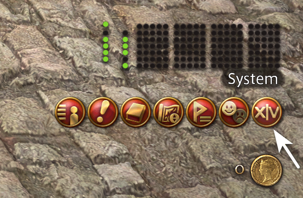
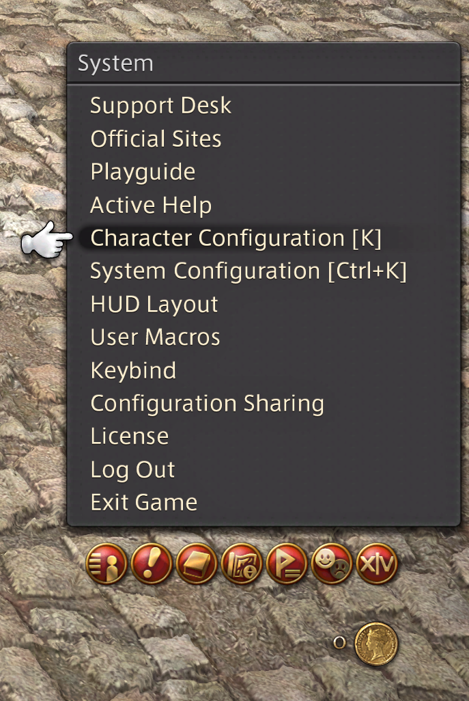
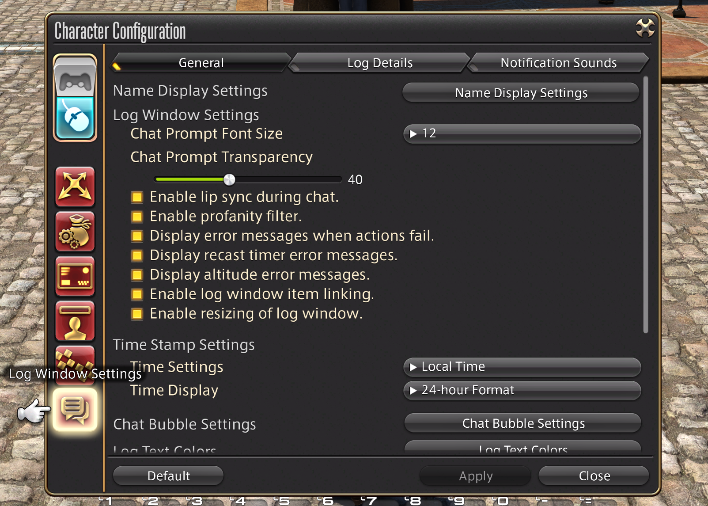
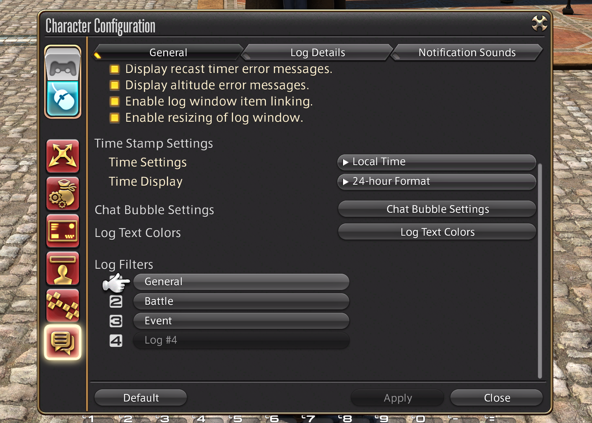
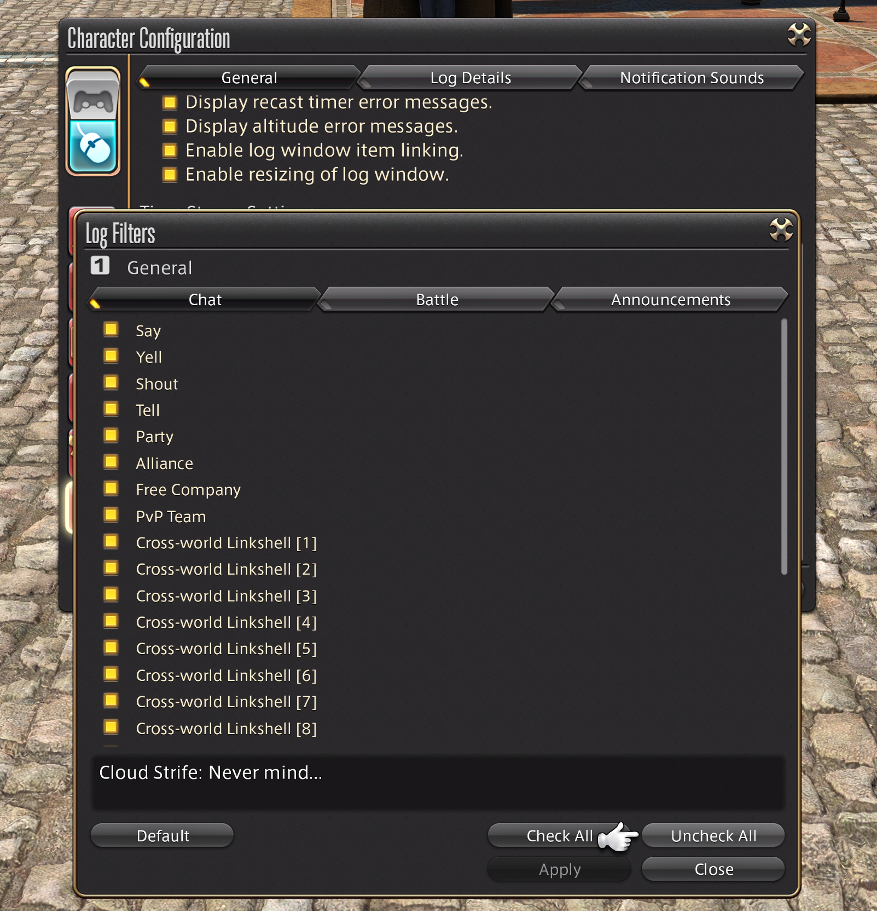
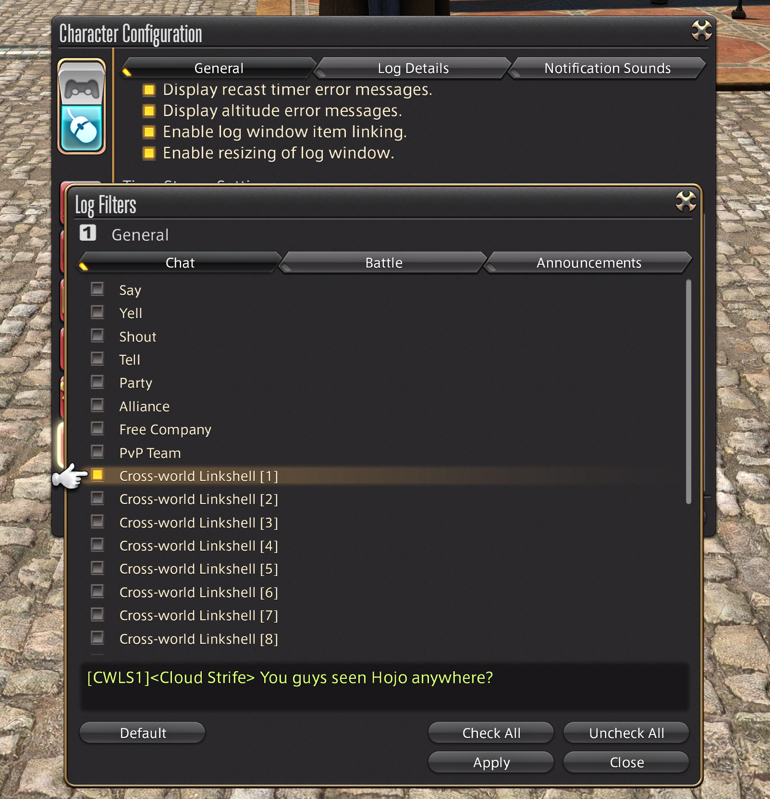
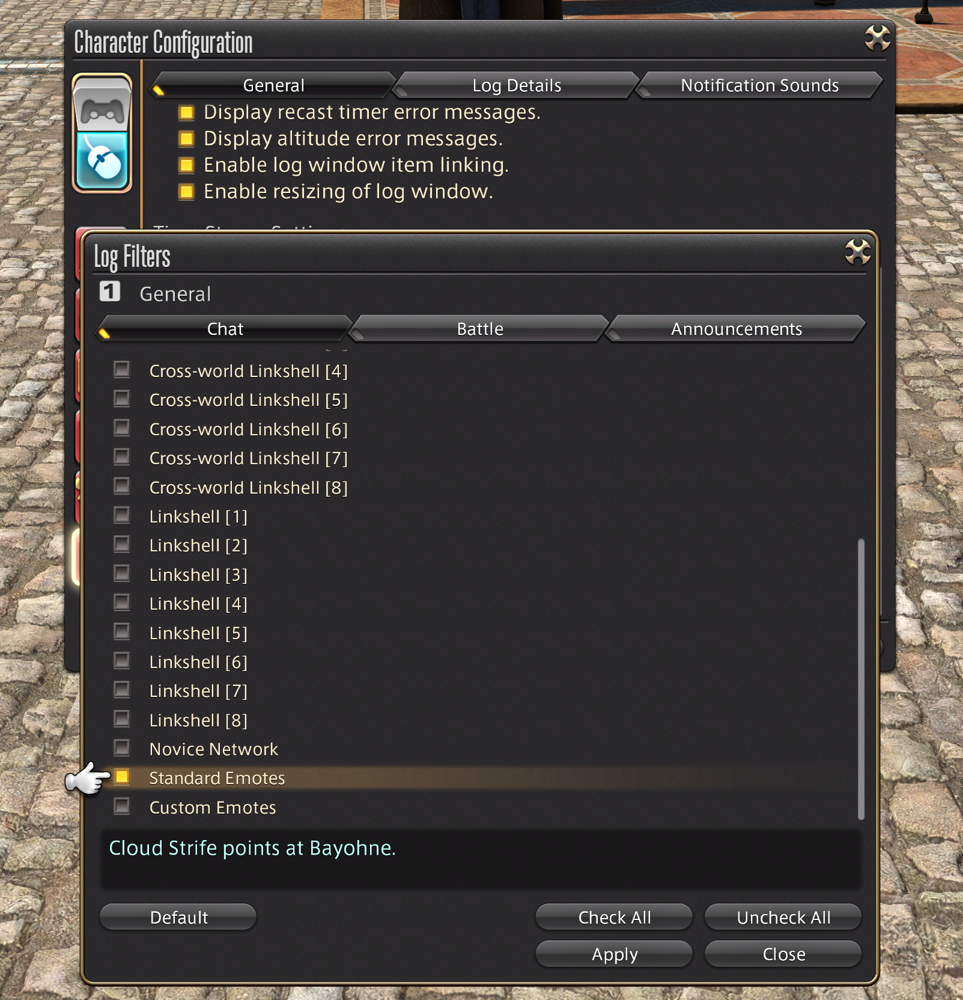

UI & Customization Guide
A step-by-step tutorial to configure chat settings in Final Fantasy XIV Online
Find and click the button for the System Menu in the bottom right corner of the game screen.

Find and click the words Character Configuration.

Click on the bottom left icon for Log Window Settings.

Scroll down in the window on the General tab to the Log Filters section and open #1 General.

In this submenu, the General tab controls all the possible chat channels that can be displayed in game. Look in the bottom right for the Uncheck All button and click it.

Scroll to Cross-world Linkshell [1] and reenable it. This will be a special channel that will only be accessible by the girls to chat with one another.

The game has standard emotes such as Lilac Honeylime waves to you. that are appropriate and fun for all ages.
